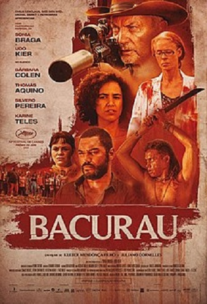

Filmes no Brasil
Procurando filmes nacionais? Está no site certo!
Então pega a sua pipoca e se prepara que lá vem filmes!
Resumo da História
O cinema no Brasil surgiu oficialmente em 1896 como uma forma de entretenimento em sessões do antigo Jornal do Commercio. Mas foi somente entre 1907 e 1910 que criou-se um pequeno mercado exibidor de filmes. Embora foi muito difundido nas décadas seguintes em seus 120 anos de história, a indústria cinematográfica nacional ainda não se consolidou como autosuficiente, mas são muitos os títulos reconhecidos internacionalmente. Você sabia que são produzidos, em média, 90 a 100 filmes longa-metragem por ano no Brasil? Contudo não são todos os títulos que conseguem um lançamento comercial nos cinemas.
Comédia
Minha Mãe é Uma Peça
Lançado em 21 de junho de 2013
Minha mãe é uma peça, é um dos filmes de comédia brasileiro mais famosos nacionalmente. Foi um sucesso de bilheteria, O filme foi atingindo uma marca de dois milhões de espectadores em sua terceira semana de exibição nos cinemas. é um longa-metragem de comédia brasileiro dirigido por André Pellenz, protagonizado por Paulo Gustavo e escrito pelo mesmo em parceria com Fil Braz. É baseado na peça homônima criada e estrelada pelo próprio Paulo e que levou milhões de espectadores ao teatro ao longo dos anos em cartaz. Foi o filme mais assistido nos cinemas brasileiros em 2013, com mais de 4.600.145 espectadores.
Leia mais...Terror
As Boas Maneiras
Lançado em 7 de junho de 2018Apesar do Brasil ter pucas produções de filmes de terror, não deixa de ter bons filmes para ver, As Boas Maneiras teve sua estreia mundial em 6 de outubro de 2017 no Festival Internacional de Cinema de Locarno, na Suíça, e foi lançado no Brasil em 7 de junho de 2018. O filme foi recebido com avaliações muito positivas por parte da crítica, com elogios para o roteiro e a forma como o gênero do horror foi explorado, além de aclamações para as atuações das protagonistas do filme. Entretanto, o sucesso não se repetiu em sua exibição comercial no Brasil.
Leia mais...Ação
Tropa de Elite
Lançado 17 de agosto de 2007 na pré-estreia no Rio de Janeiro e 12 de outubro de 2007 nacionalmente
Um dos filmes mais famosos do Brasil, internacionalmente e nacionalmente, O filme recebeu o prêmio Urso de Ouro de melhor filme no Festival de Berlim 2008. Tropa de Elite, amplamente conhecido como Tropa de Elite - Missão Dada é Missão Cumprida, é um filme policial, com o gênero drama/filme policial, dirigido por José Padilha. Tem como tema a violência urbana na cidade brasileira do Rio de Janeiro junto com a ajuda do Batalhão de Operações Policiais Especiais (BOPE) e da Polícia Militar do Estado do Rio de Janeiro
Leia mais...Aventura
O Auto da Compadecida
Lançado em 15 de setembro de 2000
O Auto da Compadecida é um filme brasileiro de comédia dramática, lançado em 2000, dirigido por Guel Arraes, com roteiro de Adriana Falcão, João Falcão e do próprio Arraes, e baseado na peça teatral Auto da Compadecida de 1955 de Ariano Suassuna, com elementos de O Santo e a Porca e Torturas de um Coração, ambas do mesmo autor, além de influências de Decamerão, clássico de Giovanni Boccaccio. Trata-se de uma adaptação de formato da minissérie homônima, lançada em 1999. Durante o Grande Prêmio do Cinema Brasileiro, evento criado pelo Ministério da Cultura, o filme recebeu as premiações de melhor diretor, melhor roteiro, melhor lançamento e melhor ator. Foi visto por mais de dois milhões de espectadores, sendo o filme brasileiro de maior bilheteria de 2000.
Leia mais...Drama
Central do Brasil
3 de abril de 1998
Mais um dos filmes Brasileiros famosos internacionalmente. Central do Brasil é um filme brasileiro de 1998 dirigido por Walter Salles, produzido pela VideoFilmes, escrito por João Emanuel Carneiro e Marcos Bernstein, e estrelado por Fernanda Montenegro e Vinícius de Oliveira. Central do Brasil recebeu "aclamação universal" por parte da crítica especializada, que elogiou a direção, o roteiro, as atuações e a trilha sonora, e entrou em diversas publicações dos Melhores do Ano. É considerado um clássico e um dos filmes brasileiros mais importantes já feitos, uma vez que representou um grande marco no período de reflorescimento da produção cinematográfica brasileira, conhecido como "cinema da retomada", e restituiu confiança ao cinema nacional. Em seu lançamento no Festival internacional de Cinema de Berlim, a produção conquistou o prestigiado prêmio Urso de Ouro de Melhor Filme e o Urso de Prata de Melhor Atriz. Em novembro de 2015, a obra entrou na lista dos 100 Melhores Filmes Brasileiros de Todos os Tempos, realizada pela Associação Brasileira de Críticos de Cinema.
Leia mais...Romance
O Homem que Copiava
Lançado em 13 de junho de 2003.O romance no Brasil, em conjunto com a comédia na maioria das vezes. O Homem que Copiava é um filme brasileiro de 2003, do gênero drama e é o segundo longa-metragem dirigido pelo cineasta gaúcho Jorge Furtado. O filme, ambientado na zona norte da cidade de Porto Alegre, conta a história de André, um jovem operador de fotocopiadoras que precisa de 38 reais para se aproximar de sua vizinha Sílvia, por quem está apaixonado. Para isso, é ajudado por Cardoso, empregado de uma oficina, que topa qualquer coisa por dinheiro. Marinês é uma jovem que explora sua sensualidade para ascender na vida, e acaba se identificando com Cardoso. Ele tem uma ideia de copiar notas de 50 reais com a nova maquina colorida que ganha na empresa, mas não conformado e com medo de ser descoberto, decide assaltar um carro forte, conseguindo roubar 2 milhões de reais. Logo em seguida, para sua sorte, ganha na loteria. André vira um milionário, conquista o coração da sua amada Silvia, e juntos com Cardoso e Marinês, viajam para o Rio de Janeiro.
Leia mais...Ficção Científica
Bacurau
Lançado em 29 de agosto de 2019 no Brasil.
Filmes de Ficção Científica, também bastante incomum Bacurau é um filme franco-brasileiro de 2019, dos gêneros drama, faroeste, terror gore, fantasia e ficção científica, escrito e dirigido por Kleber Mendonça Filho e Juliano Dornelles. Foi produzido por Emilie Lesclaux, Saïd Ben Saïd e Michel Merkt e estrelado por Sônia Braga, Udo Kier, Silvero Pereira e Bárbara Colen. O título do filme é o apelido do último ônibus da madrugada no Recife, referente a uma ave caprimulgídea de hábitos noturnos comum nos sertões brasileiros, o bacurau (Nyctidromus albicollis), que era chamado pelos povos tupis de wakura'wa. A produção conquistou o Prêmio do Júri no Festival de Cannes de 2019, tornando-se o segundo filme brasileiro da história a ser laureado no certame geral
Leia mais...Paulo Gustavo
Paulo Gustavo Amaral Monteiro de Barros (Niterói, 30 de outubro de 1978 — Rio de Janeiro, 4 de maio de 2021) foi um ator, humorista, diretor, roteirista e apresentador brasileiro. Ficou conhecido pelo monólogo Minha Mãe É uma Peça, o qual, em 2013, foi adaptado ao cinema e virou o longa-metragem Minha Mãe É uma Peça, que tornou-se o filme mais assistido daquele ano no Brasil
Lázaro Ramos